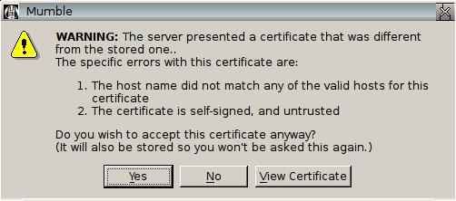
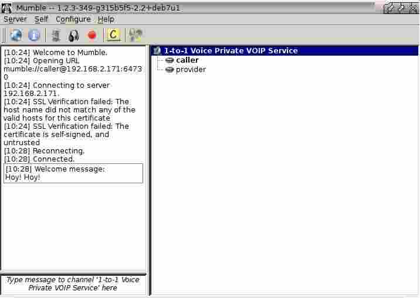
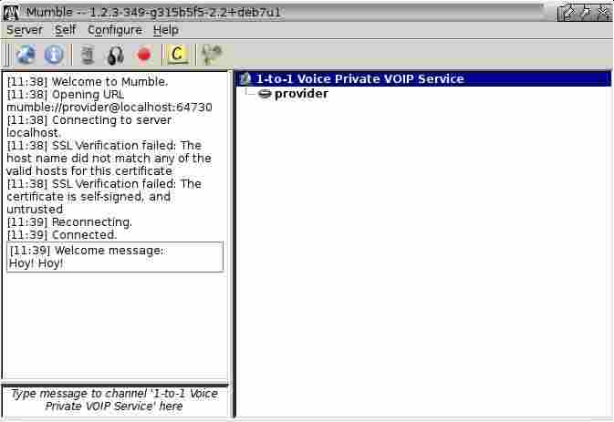

Conventions
What is 1 to 1 Voice
It is a simple way to talk privately with the user of another system.
A system may perform either of two roles:
-
Call a 1-to-1 Voice Service Provider
-
Provide a 1-to-1 Voice Service for a Caller
The caller and provider make contact across either the internet or local network. The connection is automatically encrypted to provide privacy during the call. The conversation happens in real time in a similar manner to a telephone call.
It is self contained. Except for an ISP, connections across the internet do not depend upon the availability of third party services. Creation of external facilities or registration with their providers are not required. Additional financial commitment is not needed.
Typical Use Case
The user prefers to work by clicking buttons rather than by typing commands. Their interest is in using their system rather than understanding its technicalities. Beyond the applications they normally use day-to-day, they have low levels of confidence in their technical abilities. When something unforeseen occurs, they rely upon the expertise of someone else to resolve it.
Something happens that the user wants to discuss with someone else. Just like making a regular 'phone call, the user calls the service that the other person provides and the conversation takes place.
The user’s preference is for a basic service that is simple, familiar, and obvious to use, rather than a complex one that offers many features and is unclear how to use because of the large number of optional settings they might have to handle.
Scenario Private Call via the Internet
-
The caller system is behind a local network firewall/router that the user cannot or does not want to configure
-
The caller system might or might not be running a firewall that the user does not want to configure
-
The provider system is behind a local network firewall/router that forwards the required port to their system
-
If a firewall is running on the provider system, it allows a connection to the forwarded port
-
The caller and the provider systems are many miles apart and will connect across the internet
-
The connection is automatically encrypted before the 1-to-1 call is allowed to start
-
The call is automatically started and all traffic passes within the encrypted tunnel
|
|
If you are connecting via a local network rather than the internet, there is no need to forward any ports to the provider system. In that case, both provider and caller systems must be in the same local network i.e. behind the same local network firewall/router. |
Call a Voice Service Provider
Security Measures
-
Automatically uses SSL to create an encrypted connection
Pre-Connection Requirements
-
The provider system is listening for a connection
-
The provider system operator has supplied you the IP address to contact
-
Your system has working audio, able to output sounds via headset/speakers and input sounds via a microphone
Making a Call
From the antiX menu select
1-to-1 Voice
A window opens asking which mode is wanted.
If a buton is not pressed, Call is automatically started after a timeout
A window opens asking what IP address to contact
Enter the IP Address supplied by the provider system operator
The first time you run call mode, a wizard will open advising you how to set up Mumble for your particular hardware. This is the application that 1-to-1 Voice uses to talk with the service provider. Follow the on-screen prompts to conduct the set up procedure.
|
|
Refer to section Fine Tuning to change the configuration after initial set up. |
|
|
If you have previously run provide mode, or Mumble as a separate applicaction, 1-to-1 Voice will automatically use the set up you created at that time. In such a case, setting up again is not required. |
The first time you run call mode, a window will open asking whether you want to accept an SSL certificate from the service provider.

Click Yes to accept and store the certificate.
A window opens to indicate the connection has been made to the provider service.

When both caller and provider are listed, you are ready to hold your private conversation.
Provide a Voice Service for a Caller
Security Measures
-
Automatically uses SSL to create an encrypted connection
Pre-Connection Requirements
-
Your local network firewall/router forwards port 64730 to the provider system
-
You have started provider mode before the caller system requests a connection
-
You have supplied the caller system operator your external IP address
-
Your system has working audio, able to output sounds via headset/speakers and input sounds via a microphone
|
|
Each firewall/router handles port forwarding in its own way, this means there is no single description that can cover all variations. You should refer to the user manual to do the setting up. |
|
|
If you are connecting via a local network rather than the internet, there is no need to forward any ports to the provider system. |
IP Address
To provide access across the internet for a caller system, a connection must be made to the external IP address of your local network firewall/router. This is different from the internal address it uses on your local network.
A home firewall/router will usually have its external IP address assigned by your ISP. Often the ISP can change this external address without your knowlege and without affecting your access to the internet. This means your external address must be confirmed before each call can be started.
To Discover Your External IP Address
Open a web (internet) browser
Enter the address http://whatismyip.com
Supply the IP address to the person operating the caller system, via email or some other means.
|
|
If you are connecting via a local network rather than the internet, supply to the caller system operator the IP address of the provider system. |
Begin Providing the Service
From the antiX menu select
1-to-1 Voice
A window opens asking which mode is wanted.
Press the Provide button
The service starts and you will be automatically logged in as an unprivileged user named provider. The first time you run provide mode, a wizard will open advising you how to set up Mumble for your particular hardware. This is the application that 1-to-1 Voice uses to talk with the caller via the service you are now providing. Follow the on-screen prompts to conduct the set up procedure.
|
|
Refer to section Fine Tuning to change the configuration after initial set up. |
|
|
If you have previously run call mode, or Mumble as a separate applicaction, 1-to-1 Voice will automatically use the set up you created at that time. In such a case, setting up again is not required. |
A window opens to indicate you have joined the service.

When a caller joins the service, you are ready to hold your private conversation.
Stop Providing the Service
Close Mumble in the usual way via its window or icon in the taskbar. This automatically closes the Murmur service.
Provide Multiple Concurrent Voice Services from a Single Location
In cases where two or more systems are present at your site, each of them may provide an independent 1-to-1 Voice service.
To provide a service exclusively to any system in the same local network, the default configuration may be used. All systems providing a service may operate concurrently with an identical configuration. Use 1-to-1 Voice as described in the section Provide a Voice Service for a Caller
To provide a service to any system across the internet and local network, each system providing service must have an individual configuration as described in the following steps.
Port Number
Your local network firewall/router must forward a unique port number to each system e.g. 64730 (default), 64731, 64732, etc.
|
|
Each firewall/router handles port forwarding in its own way, this means there is no single description that can cover all variations. You should refer to the user manual to do the setting up. |
1-to-1 Voice Settings
You must change the port number in both the Murmur and Mumble configuration files to ensure they match the value in the firewall/router
|
|
Settings are held in hidden files in your home folder .config/1-to-1_voice/murmur.ini .config/1-to-1_voice/mumble.conf |
|
|
A simple way to open a file for editing is 1. Switch your file manager to show hidden files 2. Browse to .config/1-to-1_voice/filename 3. Select the file and open it in your text editor |
In the files, find the section that specifies the port number, enter the required value, and save the file.
|
|
Example setting an alternative port number in murmur.ini |
|
|
Example setting an alternative port number in mumble.conf |
Details to Supply to a Caller
When providing a service from a system using an alternative port number it is neccessary to supply the caller your contact details in the following format
IPAddress:PortNumber
You should advise the caller to enter the entire details in order to successfully contact your service.
|
|
The format is important. It must not contain any spaces. The colon is required between the IP address and port number. |
Fine Tuning
Usually the initial settings created by the Mumble Audio Wizard do not have to be changed for 1-to-1 Voice to work.
The wizard may be run again or other settings modified from the main window. Because of the large number of items that can be changed it is impractical to cover more than a few basic options. The Mumble web site is the preferred starting point for further information.
Audio Input and Output Devices
A range of devices that are specific to each individual system will be available to choose from. Often the lists will include a default device. Selecting such a device will usually produce a working result, but it may not be the optimum choice. Try the other devices and monitor the difference in CPU demand. It might be possible to obtain a working result that uses fewer resources.
Positional Audio
In a conversation between two people this is of little use and may be disabled.
Text to Speech
In a two person session it is preferable to disable this and use sounds instead.
Transmission
The most convenient option is to choose to transmit continuously. This produces the highest demand for CPU. Prefer the Voice Activity option to reduce the demand.
Overlay
In a conversation between two people this is of little use and may be disabled.
Unwanted Instance of Murmur
Installing mumble-server (Murmur) by default starts Murmur as part of the boot-up routine. This is not needed nor used by 1-to-1 Voice. If you are not providing another independent Murmur service on this system, you can reduce the otherwise wasted CPU and RAM usage by preventing this automatic action.
In a system that uses sysVinit, running the following the commands in a terminal will respectively
-
Disable automatic startup of a stock mumble-server during bootup
-
Stop a running instance of a stock mumble-server
|
|
sudo update-rc.d mumble-server disable sudo /etc/init.d/mumble-server stop |
Alternatively, run the first command, then reboot the system.
SuperUser Account
The SuperUser account is the inbuilt administrative account for Murmur. This is the application that 1-to-1 Voice uses to provide the service for a caller. It is different from the administrative account for your operating system which is usually called root, but occasionally may be referred to using the generic term superuser.
The SuperUser account is not required to provide a 1-to-1 Voice service. Because it is not needed nor used by 1-to-1 Voice, the default setting is for it to be switched off. The facility to activate it is provided only as a convenience for interested users. Any changes made via the SuperUser account are deemed to be beyond the scope of the 1-to-1 Voice project.
The SuperUser account accesses Murmur via the Mumble interface. You can activate the account by changing the settings in the appropriate configuration file.
|
|
Settings are held in a hidden file in your home folder .config/1-to-1_voice/mumble.conf |
|
|
A simple way to open mumble.conf for editing is 1. Switch your file manager to show hidden files 2. Browse to .config/1-to-1_voice/mumble.conf 3. Select the file and open it in your text editor |
In the file, find the section that enables to account. The default setting is for it to be left empty (blank). Simply enter the letter y and save the file.
|
|
Example setting to enable the SuperUser account |
Each time 1-to-1 Voice is started to provide a service, a window opens asking how to handle the SuperUser password
If a button is not pressed, Existing is automatically started after a timeout.
The first time you run provide mode a window opens asking you to set the SuperUser password
Type your preferred password
When the Mumble window is displayed you may sign in using SuperUser account.
Summary of Files
Call Mode
-
Configuration file is located in /home/USERNAME/.config/Mumble/Mumble.conf
Provide Mode
-
Configuration file for murmur server is located in /home/USERNAME/.config/1-to-1_voice/murmur.ini
-
Log file is located in /home/USERNAME/.config/1-to-1_voice/murmur.log
-
Configuration file for 1-to-1 Voice options is located in /home/USERNAME/.config/1-to-1_voice/mumble.conf
Executable files are located in /usr/local/bin/
-
1-to-1_voice.sh is the launcher script
-
1-to-1_voice_call.sh is the wrapper script for mumble
-
1-to-1_voice_provide.sh is the wrapper script for mumble-server (murmur) plus mumble
Menu file is located in /usr/share/applications/antix/
-
1-to-1_voice.desktop
Icon files are located in /usr/share/pixmaps/
-
1-to-1_voice.png
-
cross_red.png
-
key_yellow.png
-
questionmark_yellow.png
References
Mumble and Murmur
http://wiki.mumble.info/wiki/Main_Page
Video
antiX 15 - 1-to-1 Voice by runwiththedolphin https://www.youtube.com/watch?v=ED_9MUSjO1s